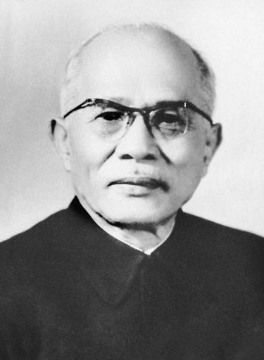
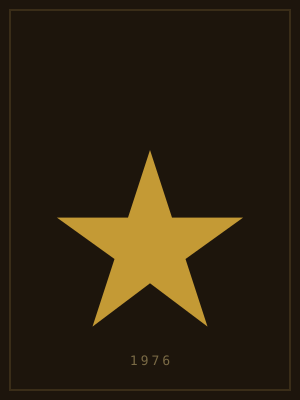
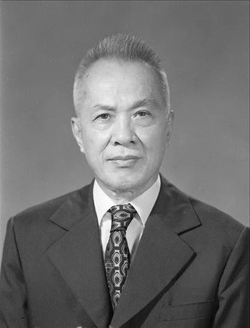

3 · 1 · 1976
Chỉ thị 228-CT/TW
Bộ Chính trị quyết định Tổng tuyển cử “tiến hành trong cả nước cùng một ngày” — phổ thông, bình đẳng, trực tiếp, bỏ phiếu kín.
Truyện cuộn trang · Tư liệu 1975 — 1976
Ngày đất nước
có tên mới
Kỳ họp thứ nhất, Quốc hội khóa VI — Quốc hội đầu tiên của nước Việt Nam thống nhất. Hội trường Ba Đình, Hà Nội, 24/6 – 3/7/1976.
Chương I
Sau đại thắng Mùa xuân 1975, non sông thu về một mối. Nhưng về pháp lý, trên đất nước vẫn tồn tại hai chính phủ: Chính phủ Việt Nam Dân chủ Cộng hòa và Chính phủ Cách mạng lâm thời Cộng hòa miền Nam Việt Nam. Nhiệm vụ cấp bách: thống nhất nước nhà về mặt Nhà nước.

MIỀN BẮC
MIỀN NAM
“Nước Việt Nam là một, dân tộc Việt Nam ta là một.”
Chương II · Sài Gòn, 15 – 21/11/1975
“Cần tổ chức sớm cuộc Tổng tuyển cử trên toàn bộ lãnh thổ Việt Nam để bầu ra Quốc hội chung cho cả nước…”
— Thông báo Hội nghị Hiệp thương chính trị, 21/11/1975
3 · 1 · 1976
Bộ Chính trị quyết định Tổng tuyển cử “tiến hành trong cả nước cùng một ngày” — phổ thông, bình đẳng, trực tiếp, bỏ phiếu kín.
22 người
Mỗi miền 11 đại biểu. Chủ tịch Trường Chinh, Phó Chủ tịch Phạm Hùng — giám sát bỏ phiếu, công bố kết quả, cấp giấy chứng nhận trúng cử.
25 · 4 · 1976
Cử tri hai lần đầu tiên cùng đi bầu một Quốc hội chung — với tư thế người làm chủ đất nước.
Chương III · 25/4/1976
0
cử tri trên toàn lãnh thổ
0
tỷ lệ cử tri đi bầu
0
người ra ứng cử
0
đại biểu trúng cử ngay vòng đầu
Mỗi ngôi sao là một người được cử tri cả nước gửi gắm — 249 miền Bắc, 243 miền Nam, trúng cử ngay vòng đầu, không nơi nào phải bầu lại.
0 / 492
NGUỒN: VĂN KIỆN QUỐC HỘI TOÀN TẬP, TẬP 5
Chương IV · 24/6/1976
CUỘN TIẾP →
Hội trường Ba Đình, Hà Nội — nơi Quốc hội thống nhất họp kỳ đầu tiên. WIKIMEDIA COMMONS
Quốc huy trên bục phát biểu, kỳ họp thứ nhất. TTXVN
“Kỳ họp Quốc hội lần này là một cái mốc trong lịch sử phát triển của Nhà nước ta.”
LUẬT SƯ NGUYỄN HỮU THỌ — DIỄN VĂN KHAI MẠC
“Lịch sử dân tộc đã chuyển sang một bước ngoặt vĩ đại.”
BÍ THỨ THỨ NHẤT LÊ DUẨN — BÁO CÁO CHÍNH TRỊ
“TOÀN DÂN ĐOÀN KẾT XÂY DỰNG TỔ QUỐC VIỆT NAM THỐNG NHẤT XÃ HỘI CHỦ NGHĨA”
492 đại biểu · 38 tỉnh thành
ĐOÀN CHỦ TỊCH KỲ HỌP GỒM 36 THÀNH VIÊN
Chương V · Ngày 2/7/1976
VIỆT NAM
DÂN CHỦ CỘNG HÒA
NGHỊ QUYẾT · KỲ HỌP THỨ NHẤT · QUỐC HỘI KHÓA VI · 02·07·1976
Việt Nam là một nước độc lập, thống nhất và xã hội chủ nghĩa lấy tên là nước Cộng hòa xã hội chủ nghĩa Việt Nam.
Quốc kỳ — nền đỏ, ở giữa có ngôi sao vàng năm cánh.
Quốc huy — hình tròn, ngôi sao vàng năm cánh, chung quanh có bông lúa, dưới có nửa bánh xe răng cưa và dòng chữ tên nước.
Thủ đô là Hà Nội.
Quốc ca là bài Tiến quân ca.
TM. ĐOÀN CHỦ TỊCH — TRƯỜNG CHINH
NQ·2
Kế tục sự nghiệp 5 khóa Quốc hội trước, từ Cách mạng Tháng Tám 1945.
NQ·3
Hoạt động trên cơ sở Hiến pháp 1959: Quốc hội, Chủ tịch nước và hai Phó Chủ tịch, Ủy ban Thường vụ, Hội đồng Chính phủ, Hội đồng Quốc phòng, TAND tối cao, VKS tối cao.
NQ·4
36 thành viên, do Trường Chinh làm Chủ tịch — chuẩn bị Hiến pháp 1980.
NQ·5
Tên gọi chính thức của thành phố Sài Gòn – Gia Định từ ngày 2/7/1976.
Chương VI · Ngày 2/7/1976





Phó Chủ tịch kiêm Tổng Thư ký Ủy ban Thường vụ Quốc hội: Xuân Thủy. Bảy Phó Thủ tướng: Phạm Hùng, Huỳnh Tấn Phát, Võ Nguyên Giáp, Nguyễn Duy Trinh, Lê Thanh Nghị, Võ Chí Công, Đỗ Mười. Chánh án TAND tối cao: Phạm Văn Bạch. Viện trưởng VKSND tối cao: Trần Hữu Dực. Ngày 3/7/1976 kỳ họp bế mạc — nhiệm kỳ Quốc hội khóa VI kéo dài đến 23/6/1981; ngày 18/12/1980, tại kỳ họp thứ bảy, Quốc hội thông qua Hiến pháp 1980.